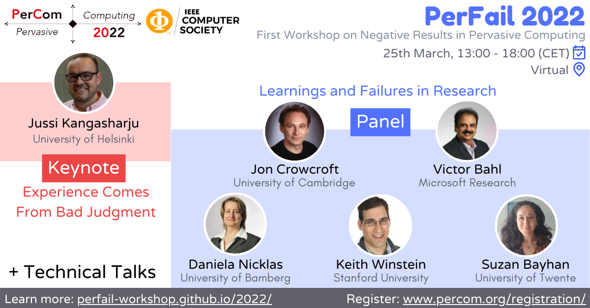

I am an Assistant Professor in the Networked Systems Group of the Faculty of Electrical Engineering, Mathematics, and Computer Science (EEMCS) at the Delft University of Technology (TU Delft), Netherlands. My research interests are in the areas of edge computing, next-generation network protocols, Internet-wide measurements, and critical application managment/deployment. Read more about my research here.
Prior to joining Delft, I was a postdoc in the Technical University of Munich (TUM), Germany working with Prof. Dr. Jörg Ott. I received my Ph.D. from the University of Helsinki, Finland in 2019. My Ph.D. thesis has been awarded Outstanding Ph.D. Dissertation Award by the IEEE Technical Committee on Scalable Computing (TCSC). I received my Master's from IIIT Delhi, India in 2015.
I am on a lookout for motivated Ph.D. students to join my group at TU Delft. If you are interested in my research areas and want to work with me, please email me!
Recent News
| August, 2024 | I joined as an Assistant Professor at the Networked Systems Group in Delft University of Technology (TU Delft), Netherlands. |
| August, 2024 | Our paper Twinkle, Twinkle, Streaming Star: Illuminating CDN Performance over Starlink is accepted as a poster in ACM Internet Measurement Conference (IMC) 2024. |
| July, 2024 | Our comprehensive Starlink global measurement study (published in WWW 2024) has been featured by RIPE and APNIC on their newsletters. |
| June, 2024 | Call-for-Papers for LEO Networking and
Communications
(LEO-NET
2024) workshop colocated with MobiCom
2024 is out now! Please consider submitting your work!

|
| June, 2024 | I am serving as a PC member for ACM Internet Measurements Conference (IMC) 2025. Please consider submitting your work! |
| June, 2024 | Jakob Kempter successfully defended his master thesis "Next-Generation Orchestration Frameworks for Multicluster Cloud-Edge Integration.". Congratulations Jakob! |
| April, 2024 | I will be talking in the IEEE VTS SAGWICS seminar series.

|
| April, 2024 | I gave an invited talk on our Starlink performance research at ITS Europe Symposium 2024.

|
| April, 2024 | I am serving as a PC member for USENIX Symposium on Networked Systems Design and Implementation (NSDI) 2025. Please consider submitting your work! |
| March, 2024 | I presented our research on Starlink
network performance at LEOCONN
Webinar Series. Check it out below. |
| March, 2024 | I am on the organizing committee of ACM EuroSys 2025 as Poster Co-Chair. Call for posters to be released soon! |
| March, 2024 | Giovanni will be talking about our research on application metric exposure through sidecars at IETF 119. This work was partly presented at ACM CoNEXT 2023. |
| January, 2024 | Our paper A Multifaceted Look at Starlink Performance is accepted in ACM The Web Conference (WebConf) 2024 [previously WWW]. Congratulations to all co-authors! |
| January, 2024 | I am serving as a PC member for Internet Measurement Conference (IMC) 2024. |
| December, 2023 | Characterizing Distributed Mobile
Augmented
Reality Applications at the Edge
in
ACM CoNEXT 2023 was awarded all three artifact reproducibility badges!


|
| November, 2023 | Our work nextGSIM on 6G simulator was
awarded
the Best Paper Award at IEEE
Future Networks 2023.

|
| November, 2023 | I am TPC Chair of the IFIP Network Traffic Measurement and Analysis Conference (TMA 2024) which will be held in Dresden, Germany in May, 2024. CFP to be released soon! |
| October, 2023 | Our paper Characterizing Distributed Mobile Augmented Reality Applications at the Edge is accepted in ACM Conference on emerging Networking EXperiments and Technologies (CoNEXT) 2023 (acceptance rate: 19.3%). Congratulations to all co-authors! |
| October, 2023 | Dagstuhl seminar on
Edge-AI: Identifying Key Enablers in Edge Intelligence was a huge success with
several interesting discussions on the convergence and future of edge computing and AI.

|
| October, 2023 | I am TPC Chair of the ACM Intl. Conf. on the Internet of Things (IoT 2024) with Jan Rellermeyer which will be held in Oulu, Finland in November, 2024. CFP to be released soon. |
| October, 2023 | Our paper Multipath Transport Analysis over Cellular and LEO Access for Aerial Vehicles is accepted in IEEE Access. |
| October, 2023 | I am serving on the IRTF ANRP 2024 award committee. Consider submitting your cool accepted research works as nomination! Deadline mid-November! |
| October, 2023 | LEO-NET 2023 was held in-person in Madrid, Spain and was a huge success. A huge thanks and congratulations to my co-organizers (Deepak Vasisht and Mohamed Kassem), LEO-NET speakers and attendees for making this happen. |
| September, 2023 | Our paper nextGSIM: Towards Simulating Network Resource Management for Beyond 5G Networks is accepted in IEEE Future Networks World Forum. |
| August, 2023 | I am serving as a PC member for The Web Conference (WebConf) [previously WWW] 2024. |
| July, 2023 | Jörg
Ott presented Oakestra in IETF 117 COINRG.
Check it out below. |
| July, 2023 | Jörg will be talking about Oakestra at Computing in the Network Research Group (COINRG) at IETF 117.

|
| July, 2023 | I will be talking about Oakestra at TUM Industry Day.

|
| June, 2023 | Our paper Oakestra: A Lightweight
Hierarchical
Orchestration Framework for Edge Computing
in USENIX
ATC 2023 was awarded all three artifact reproducibility badges!


|
| May, 2023 | Call-for-Papers for LEO Networking and Communications (LEO-NET 2023) workshop colocated with MobiCom 2023 is out now! Please consider submitting your work! |
| May, 2023 | I was awarded my doctoral hat and sword at the 100th Ph.D. promotion ceremony at Helsinki.
You can watch the full conferment ceremony video here. 
|
| May, 2023 | Dagstuhl seminar on
Lessons Learned From 40+ Years of the Internet was a huge success! It was an
amazing
opportunity to meet with the pioneers of the Internet that made it the success that it
is today.

|
| May, 2023 | Our paper Perspectives on Negative Research Results in Pervasive Computing is accepted in IEEE Pervasive Computing journal. The paper results from the discussions at the PerFail workshop and highlights several insights on how to avoid and manage negative results in systems, networking and pervasive computing research. |
| April, 2023 | Our work Oakestra: A Lightweight Hierarchical Orchestration Framework for Edge Computing is accepted in USENIX ATC 2023 (acceptance rate: 18.4%). Congratulations to the Oakestra team! |
| April, 2023 | I am organizing the LEO Networking and Communications (LEO-NET 2023) workshop colocated with MobiCom 2023 with Deepak Vasisht and Mohamed Kassem. CFP to be released soon. |
| March, 2023 | I visited and gave an invited talk at Dept. of Computer Science, Princeton University. Many thanks to Prof. Jennifer Rexford and Dr. Oliver Michel for hosting me! |
| March, 2023 | I visited and gave an invited talk at Dept. of Computer Science, Stony Brook University (SUNY). Many thanks to Prof. Aruna Balasubramanian for hosting me! |
| March, 2023 | I visited and gave an invited talk at College of Computing, GeorgiaTech. Many thanks to Prof. Ellen Zegura for hosting me! |
| March, 2023 | PerFail 2023 was held in-person in Atlanta, USA and was a
huge success.
A huge thanks and congratulations to my co-organizers (Ella Peltonen and Peter Zdankin),
PerFail speakers and attendees for making this happen.

|
| January, 2023 | I am serving as a PC member for Internet Measurement Conference (IMC) 2023. |
| January, 2023 | I am serving as a PC member for Network Traffic Measurement and Analysis Conference (TMA) 2023. |
| January, 2023 | Patrick Sabanic successfully defended his master thesis "Supporting Unikernel-based microservices at the edge.". Congratulations Patrick! |
| November, 2022 | I am serving as a PC member for Edge Computing track of 43rd International Conference on Distributed Computing Systems (ICDCS) 2023. |
| November, 2022 | Hosting Xiang Su (Assoc Prof. @ NTNU, NO) at TUM. |
| October, 2022 | I am serving on the IRTF ANRP 2023 award committee. Consider submitting your cool accepted research works as nomination! Deadline mid-November! |
| October, 2022 | I am serving as a PC member for Passive and Active Measurement Conference (PAM) 2023. |
| September, 2022 | Uthra Ambalavanan presented our work on DICer: Distributed
Coordination for In-Network Computations in IETF COINRG Interim.
Check it out below. |
| September, 2022 | Our paper The Many Faces of Edge Intelligence is accepted in IEEE Access. |
| August, 2022 | Our project proposal EDGELESS on cognitive edge computing was successfully awarded 5.4M euro funding by EU Horizon 2020. The consortium includes Telefonica Research, University of Cambridge, Siemens, Infinion, amongst others. |
| August, 2022 | Maria Nievas Viñals successfully defended her bachelor thesis "Designing Interaction Framework for Multi-Admin Edge Infrastructures.". You can check out her final presentation here. Congratulations Maria! |
| August, 2022 | APNIC coverage of our MPTCP support is out now. Read it here. |
| August, 2022 | Our paper Analyzing Real-time Video Delivery over Cellular Networks for Remote Piloting Aerial Vehicles is accepted in ACM Internet Measurements Conference (IMC). |
| August, 2022 | Oakestra's webpage is now live at oakestra.io . |
| August, 2022 | I have been invited to participate in Dagstuhl seminar on Lessons Learned From 40+ Years of the Internet in Dagstuhl, Germany. |
| August, 2022 | Our paper DICer: Distributed Coordination for In-Network Computations is accepted in ACM Information-Centric Networking (ICN). |
| August, 2022 | Our paper Resource Reservation in Information Centric Networking is accepted as a poster in ACM Information-Centric Networking (ICN). |
| August, 2022 | I have been invited to participate in Munich Internet Research Retreat (MIR^3) in Raitenhaslach, Germany. |
| August, 2022 | I am organizing the PerFail 2023 colocated with PerCom 2023 with Ella Peltonen and Peter Zdankin. CFP to be released soon. |
| August, 2022 | Stefan Vladov successfully defended his master thesis "Have your cake and eat it too: Analyzing energy usage in blockchain protocols.". You can check out his final presentation here. Congratulations Stefan! |
| July, 2022 | I am teaching the Internet Computing seminar course with my colleague Raphael Hetzel in the coming winter semester at TUM. |
| June, 2022 | Our work Oakestra: An Orchestration Framework for Edge Computing is accepted in ACM SIGCOMM 2022 as a demo. |
| June, 2022 | Hosting Abhishek Kumar (PostDoc @ University of Oulu, FI and UIUC, USA) at the Chair for the month of June. |
| June, 2022 | I will be attending and presenting our orchestration framework for edge computing Oakestra at 34th Multi-Service Networks workshop (MSN 2022) to be held at The Cosener's House, UK. |
| May, 2022 | Sonia Klärmann successfully defended her master thesis "Evaluating the Suitability of Kubernetes for Edge Computing Infrastructure". You can check out her final presentation here. Congratulations Sonia! |
| May, 2022 | Edward Waterman successfully defended his master thesis "Agricultural AI Development on the Edge with NEVONEX". Congratulations Edward! |
| April, 2021 | I am co-chairing the Ph.D. forum at NetSys 2023 with Prof. Dr. Matthias Wählisch. |
| March, 2022 | Daniel Mair successfully defended his bachelor thesis "Designing Robust Interaction Frontend for Decentralized Edge Infrastructures". You can check out his final presentation here. Congratulations Daniel! |
| March, 2022 | PerFail 2022 (with IEEE PerCom 2022) program is out!
The workshop will discuss negative results and experiences in research from four
technical talks, keynote by
Prof. Jussi Kangasharju (University of Helsinki) and panel of
experts featuring Prof. Jon
Crowcroft (University of Cambridge), Dr.
Victor Bahl (CTO, AfO, Microsoft
Research), Dr. Suzan
Bayhan
(University of Twente), Dr.
Keith Winstein (Stanford University) and
Prof.
Daniela Nicklas (University of Bamberg). Registrations are open now!
 |
| March, 2022 | Kaushik Chavali successfully defended his master thesis "Feasibility Analysis of Multipath TCP for the Connectivity of Remote Piloting Operations of Drones and Flying Taxis". Congratulations Kaushik! |
| March, 2022 | Our paper ComB: A Flexible, Application-Oriented Benchmark for Edge Computing is accepted in ACM Workshop on Edge Systems, Analytics and Networking (EdgeSys) co-located with ACM EuroSys 2022. |
| February, 2022 | Oliver Haluszczynski successfully defended his master thesis "Service Scheduling for EdgeIO platform". You can check out his final presentation here. Congratulations Oliver! |
| February, 2022 | I am serving as a PC member for Network Traffic Measurements and Analysis (TMA) 2022. |
| February, 2022 | I am serving as a PC member for ACM Information-Centric Networking (ICN) 2022. |
| January, 2022 | Our paper Roadmap for EdgeAI: A Dagstuhl Perspective is accepted in ACM Computer Communication Review (CCR). |
| January, 2022 | Our paper Nimbus: Towards Latency-Energy Efficient Task Offloading for AR Services is accepted in IEEE Transactions on Cloud Computing (TCC). |
| January, 2022 | Simon Bäurle successfully defended his master thesis "A Flexible, Application-focused Benchmarking Suite for Edge Infrastructures". You can check out his final presentation here. Congratulations Simon! |
| January, 2022 | Our paper Contact Duration: Intricacies of Human Mobility is accepted in Online Social Networks and Media. |
| October, 2021 | The talk for our IMC 2021 paper Cloudy with a
Chance of Short RTTs: Analyzing Cloud Connectivity in the Internet is
now live! Check it out below. |
| October, 2021 | Nikita Charushnikov and Mario Turic successfully defended their bachelor theses. Congratulations to both Nikita and Mario! |
| October, 2021 | Two papers accepted in ACM Interdisciplinary Workshop on (de)Centralization in the Internet (IWCI) 2021 → Distributed Ledgers for Distributed Edge: Are we there yet? and Decentralizing Computation with Edge Computing: Potential and Challenges. Details out soon! |
| October, 2021 | I am serving as a PC member for Edge Computing track of 42nd International Conference on Distributed Computing Systems (ICDCS) 2022. |
| September, 2021 | Giovanni Bartolomeo successfully defended his master thesis "Enabling Microservice Interactions within Heterogeneous Edge Infrastructures". You can check out his final Presentation here. Congratulations Giovanni! |
| September, 2021 | The call-for-papers and webpage of PerFail workshop colocated with PerCom 2022 is out now! Please consider submitting your work there. |
| August, 2021 | Our paper Cloudy with a Chance of Short RTTs: Analyzing Cloud Connectivity in the Internet is accepted in ACM Internet Measurements Conference (IMC) 2021. |
| August, 2021 | Ralf Baun successfully defended his master thesis Realizing self-organizing platforms for edge service deployments. Congratulations Ralf! |
| August, 2021 | I am organizing the PerFail workshop colocated with PerCom 2022 with Ella Peltonen and Peter Zdankin. |
| August, 2021 | Oliver Gasser presented our work on MPTCP support in the Internet in IETF 111 maprg.
Check it out below. |
| July, 2021 | Hendrik Cech successfully defended his master thesis Evaluating Transport Protocols for Remote Piloting of Aerial Vehicles. Congratulations Hendrik! |
| July, 2021 | I have been invited to participate in Dagstuhl seminar on Identifying Key Enablers in Edge Intelligence in Dagstuhl, Germany. |
| July, 2021 | I am organizing the Doctoral Seminar (DocSem) at Chair of Connected Mobility in TUM. |
| July, 2021 | I will be taking the Hot Topics for Edge Computing seminar course with my colleague Leonardo Tonetto in the coming winter semester at TUM. |
| July, 2021 | Leo Eichhorn successfully defended his master thesis Exploring Latency Boundaries of Blockchains in Edge Computing Networks Using Emulation. Congratulations Leo! |
| June, 2021 | I have been invited as a panelist at Students in MobiSys (SMS) workshop held in conjunction with MobiSys 2021. |
| June, 2021 | We have launched MPTCP Measurement Service at mptcp.io where we regularly publish the scan results for MPTCPv0 and MPTCPv1 in IPv4 and IPv6. |
| June, 2021 | I am attending the Lorentz workshop on Beyond the Mobile-Cloud Computing
Paradigm |
| May, 2021 | The Khang Dang successfully defended his bachelor thesis Analyzing Cloud Reachability via Wireless Networks on Global Scale. Congratulations The Khang! |
| May, 2021 | RIPE Labs coverage of our cloud reachability research is out now. Read it here. |
| May, 2021 | Hasso Plattner Institut (HPI) will support our edge computing research by providing us access to their Service Oriented Computing lab infrastructure. Thank you HPI! |
| May, 2021 | I am serving as a PC member for Edge Computing and IoT track of 17th International Conference on Mobility, Sensing and Networking (MSN) 2021. Please consider submitting your cool research there. |
| April, 2021 | I am giving an invited talk on "Reality Check for Edge Computing" in 22nd Future SOC Lab Day hosted by Hasso Plattner Institut (HPI). |
| April, 2021 | Two papers accepted in IFIP Networking 2021 → From Single Lane to Highways: Analyzing the Adoption of Multipath TCP in the Internet and (How Much) Can Edge Computing Change Network Latency?. Details out soon! |
| February, 2021 | Mehdi Yosofie successfully defended his master thesis Flexible Multi-Cluster Edge Orchestration and Task Scheduling Platform. Congratulations Mehdi! |
| February, 2021 | I will be taking the Human-Centric Netwoking seminar course with my colleague Leonardo Tonetto in the coming summer semester at TUM. |
| January, 2021 | I am serving as a PC member for Workshop on Intelligent Things and Services (InThings) jointly held with IEEE WoWMoM 2021 . Please consider submitting your work there. |
| January, 2021 | Our paper Surrounded by the Clouds: A Comprehensive Cloud Reachability Study is accepted in The Web Conference (WebConf) 2021 (formerly known as WWW) to be held in Slovenia. |
| January, 2021 | Our paper SPA: Harnessing Availability in the AWS Spot Market is accepted in 3rd IEEE Infocom Workshop on Intelligent Cloud Computing and Networking to be held virtually. |
| November, 2020 | Maximilian Eder successfully defended his bachelor thesis Analyzing Cloud Reachability on Global Scale. Congratulations Maximilian! |
| November, 2020 | I am serving as a PC member for Edge Computing track of 41st International Conference on Distributed Computing Systems (ICDCS) 2021 |
| November, 2020 | I have been awarded Outstanding Ph.D Dissertation Award 2020 by IEEE Technical Committee on Scalable Computing (TCSC). The award is highly competitive and celebrates PhD dissertations that make extraordinary research contributions to the field of scalable computing. |
| October, 2020 | The talk for our paper Pruning Edge
Research with Latency Shears is now live! Check it out below. |
| October, 2020 | Florian Aschenbrenner successfully defended his bachelor thesis Measuring and Analyzing Multipath TCP support on the Internet. Congratulations Florian! |
| September, 2020 | Gave a talk about our HotNets work in Munich Internet Research Retreat Raitenhaslach (MIR^3). It was my first physical talk of this year. |
| August, 2020 | Our paper Pruning Edge Research with Latency
Shears is accepted in ACM Workshop in Hot Topics in Networking (HotNets), 2020
to be held |
| July, 2020 | I will be taking the Hot Topics for Edge Computing seminar course in the coming winter semester at TUM. |
| June, 2020 | I am serving as a TPC member for Cloud & Fog/Edge Computing, Networking and Storage track of IEEE Global Communications Conference (Globecom) 2020 |
| May, 2020 | I am giving an invited talk of our work "Reality Check for Edge Computing" in EdgeAI webinar organized by 6G Flagship and Finnish Center for Artificial Intelligence (FCAI). |
| February, 2020 | I will be taking the Internet for All seminar course with my colleague Dr. Ljubica Kärkkäinen in the coming summer semester at TUM. |
| January, 2020 | I have changed my banners and have moved countries!
From University of Helsinki, Finland ➵ Technical University of Munich, Germany. |
| January, 2020 | Our paper Bricklayer: Resource Composition on the Spot Market is accepted in IEEE International Conference on Communications (ICC), 2020 to be held in Dublin, Ireland |
| January, 2020 | I am reviewing for IEEE Transactions on Cloud Computing (TCC) 2020 |
| January, 2020 | I am serving as a PC member for Edge Computing track of 40th International Conference on Distributed Computing Systems (ICDCS) 2020 |
| January, 2020 | I am reviewing for IEEE Transactions on Network Science and Engineering (TNSE) 2020 |
| November, 2019 | Successflly defended my Ph.D.! My opponent was Prof. Dr. Abhishek Chandra and my advisor Prof. Dr. Jussi Kangasharju played the role of Custos. You can check out a photo from the defense and the video of my introductory lecture. |
| November, 2019 | I will be defending my Ph.D. soon! Read the University of Helsinki announcement here. |
| October, 2019 | Working as a Teaching Assistant for Distributed Data Infrastructures course. The course details can be found here. |
| August, 2019 | Thank you ACM SIGCOMM for a generous $1100 travel grant to attend ACM Internet and Measurmements Conference (IMC) 2019 to be held in Amsterdam, Netherlands. |
| August, 2019 | I am now reviewing for IEEE Internet of Things Journal (JIOT) and Elsevier Pervasive and Mobile Computing Journal (PMC) |
| July, 2019 | Thank you ACM SIGCOMM for a generous travel grant to attend the physical meeting of Shadow Technical Program Committee (TPC) for ACM Internet and Measurmements Conference (IMC) 2019 to be held in London, UK. |
| May, 2019 | I am serving as a member of Shadow Technical Program Committee (TPC) for ACM Internet and Measurmements Conference (IMC) 2019. |
| April, 2019 | Our paper Open Infrastructure for Edge: A Distributed Ledger Outlook is accepted in 2nd USENIX Workshop on Hot Topics in Edge Computing (HotEdge) 2019 co-located with USENIX Annual Technical Conference (ATC) to be held in Renton, Washington, USA. |
| March, 2019 | Our paper DeCloud: Truthful Decentralization Double Auction for Edge Clouds is accepted in 39th International Conference on Distributed Computing Systems (ICDCS) 2019 to be held in Texas, USA. |
| February, 2019 | Our paper ExEC:Elastic Extensible Edge Cloud is accepted in Workshop on Edge Systems, Analytics and Networking (EdgeSys), 2019 co-located with ACM EuroSys to be held in Dresden, Germany. |
| October, 2018 | Working as a Teaching Assistant for Distributed Data Infrastructures course. The course details can be found here. |
| October, 2018 | Our paper ICON: Intelligent Container Overlays is accepted in 17th ACM Workshop on Hot Topics in Networks (HotNets), 2018 to be held in Washington, USA. |
| September, 2018 | Thank you Microsoft Research for providing a partial travel grant to attend ACM MobiCom 2018 hosted by SIGMOBILE to be held in New Delhi, India. |
| August, 2018 | Our poster Redesigning MPTCP for Edge Clouds is accepted in main proceedings of ACM MobiCom 2018 hosted by SIGMOBILE to be held in New Delhi, India. |
| June, 2018 | Our paper Anveshak: Placing Edge Servers In The Wild is accepted in ACM SIGCOMM Workshop on Mobile Edge Communications (MECOMM), 2018 to be co-located with SIGCOMM'2018 to be held in Budapest, Hungary. |
| May, 2018 | Our paper Placing it right!: optimizing energy, processing, and transport in Edge-Fog clouds is accepted in Springer Annals of Telecommunication. |
| March, 2018 | Our paper QAware: A Cross-Layer Approach to MPTCP Scheduling is accepted in IFIP Networking, 2018 to be held in Zurich, Switzerland. |
| March, 2018 | Our paper MUTE: MUlti-Tier Edge networks is accepted in 5th Workshop on CrossCloud Infrastructures & Platforms to be co-located with EuroSys 2018 to be held in Porto, Portugal. |
| January, 2018 | I am currently working as Visiting Researcher with Prof. Dr. Xiaoming Fu at Institute of Computer Science, University of Göttingen in Germany. |
| November, 2017 | I will be part of the jury for Edge Hackathon being organized. If you are in Helsinki and want to win €2000 while learn more about edge clouds and its applications, feel free to participate! |
| August, 2017 | Working as a Teaching Assistant for Distributed Data Infrastructures course. The course details can be found here. |
| September, 2017 | Attending 3rd CleanSky Summer School being held in Tsinghua University, Beijing, China. |
| May, 2017 | Our paper Managing Data in Computational Edge Clouds is accepted in ACM SIGCOMM Workshop on Mobile Edge Communications (MECOMM), 2017 to be co-located with SIGCOMM'2017 to be held in Los Angeles, USA. |
| April, 2017 | Our paper on Caching in Edge-Fog clouds is accepted in CrossCloud workshop to be co-located with EuroSys'17 to be held in Belgrade, Serbia. Please see the publication section for details. |
| March, 2017 | I am currently attending NetSys-2017 conference and 3rd CleanSky ITN conference at Göttingen, Germany. A photo from the event here. |
| November, 2016 | I am currently working as Visiting Researcher with Dr. Fabian Schneider at NEC Labs Europe (NLE) in Germany. |
| October, 2016 | Our Edge-Fog cloud paper has been accepted as full-paper at IEEE CIoT-2016 to be held at Paris. Please see the publication section for details. |
| September, 2016 | Working as a Teaching Assistant for Distributed Systems course. The course details can be found here. |
| September, 2016 | Participated in Aware Machine-to-Machine Communication seminar held at Schloss Dagstuhl, Germany. A photo from the event here. |
| August, 2016 | I am attending ACM SIGCOMM 2016 in Florianopolis, Brazil. I had the opportunity to meet ACM Distinguished Prof. Jim Kurose. Our photograph together here. |
| July, 2016 | Participated in 3rd Helsinki-HKUST-Tsinghua workshop on Mobile services and Edge computing. A photo from the event here. |
| June, 2016 | The 2nd CleanSky summer school was a huge success! The pictures of the summer school are available on Flickr. A photo of participants at Suomenlinna here. |
| April, 2016 | Working as a Web-Chair for 2nd CleanSky summer school. |
| February, 2016 | Presented "Edge-Fog Cloud model" at 1st CleanSky workshop held at NEC Labs, Heidelberg, Germany. A photo of me presenting here. |
Research Overview
I consider myself as a "distributed systems" guy as I have always been involved in various domains (read "avatars") of this field. "Divided we stand, united we fall" is my personal motto in the context of computer networking research.
| Selected Publications | ATC '23 CCR '22 HotNets '20 AoT '17 |
| Selected Publications | WebConf '24 IMC '22 Networking '18 |
| Selected Publications | IMC '21 Networking '21 WebConf '21 |
| Selected Publications | CoNEXT '23 TCC '22 Networking '21 HotNets '18 |
Publications


People
I am actively looking for Ph.D. students to join my group at TU Delft.
= successfully defended
| 2023 | Rohan Bose. Real-time Communication in Heterogeneous Networks. |
| 2022 | Giovanni Bartolomeo. Orchestration for Distributed Edge Infrastructures. |
| 2021 | Mehmet Mert Beşe. Edge Resource Modeling and Management in 6G. |
| 2021 | Hendrik Cech. Enhanced Transport for Next-Generation Applications. |
| 2022 | Xiang Su. Assoc. Prof. @ NTNU Norway |
| 2022 | Abhishek Kumar. PostDoc @ University of Oulu, FI & UIUC, USA |
| 2024 | Simon Zelenski. Telemetry-driven network optimization for edge-cloud orchestration frameworks. |
| 2024 | Ben Riegel. Leveraging eBPF in Orchestrated Edge Infrastructures. |
| 2024 | Alexander Malyuk. FLOps: Practical Federated Learning via Automated Orchestration (on the Edge). |
| 2024 | Mahmoud ElKodary. Enhancing Edge Orchestration Flexibility through Addons. |
| 2024 |
Jakob Kempter. Next-Generation Orchestration Frameworks for Multicluster
Cloud-Edge Integration.
Thesis Presentation |
| 2023 |
Markus Grühlke. Multi-Tenant Edge
Testbed using Heterogenous Commodity
Hardware.
Thesis Presentation |
| 2023 |
Michael Schlicker. Multicloud
Infrastructure Broker for Edge Orchestration
Framework.
Thesis Presentation |
| 2023 |
Karthik Narumanchi. Designing a global
network measurement platform.
Thesis Presentation |
| 2022 | Md. Mahfuzul Haque Muftee. Web-based platform for LEO satellite measurements. |
| 2022 |
Patrick Sabanic. Supporting
Unikernel-based
microservices at the edge.
Thesis Presentation |
| 2022 |
Stefan Vladov. Have your cake and eat
it
too: Analyzing energy usage in
blockchain protocols.
Thesis Presentation |
| 2021 |
Kaushik Chavali. Feasibility Analysis
of
MPTCP for Remote Piloting Operations of Drones and Flying Taxis.
Thesis |
| 2022 |
Edward Waterman. Agricultural AI
Development on the Edge with NEVONEX.
|
| 2022 |
Sonia Klärmann. Evaluating the
Suitability
of Kubernetes for Edge Computing
Infrastructure.
Thesis Presentation |
| 2021 |
Oliver Haluszczynski. Service
Scheduling
for EdgeIO platform.
Thesis Presentation USENIX ATC 2023 |
| 2021 |
Simon Bäurle. A Robust Benchmarking
Suite
for Edge Infrastructures.
Thesis Presentation USENIX ATC 2023 EdgeSys 2022 |
| 2021 |
Giovanni Bartolomeo. Enabling
Microservice
Interactions within Heterogeneous Edge Infrastructures.
Thesis Presentation USENIX ATC 2023 |
| 2021 |
Hendrik Cech. Evaluating Transport
Protocols for Remote Piloting of Aerial Vehicles.
Thesis IMC 2022 |
| 2021 |
Ralf Baun. Realizing self-organizing
platforms for edge service deployments.
Thesis Presentation |
| 2021 |
Leo Eichhorn. Exploring latency
boundaries
of blockchains in edge computing networks.
Thesis ACM IWCI 2021 |
| 2020 |
Mehdi Yosofie. Flexible multi-cluster
edge
orchestration and task scheduling platform.
Thesis USENIX ATC 2023 |
| 2022 | Maria Nievas Viñals. Designing Interaction Framework for Multi-Admin Edge Infrastructures. |
| 2021 |
Daniel Mair. Designing Robust
Interaction
Frontend for Decentralized Edge
Infrastructures.
Thesis Presentation |
| 2021 | Nikita Charushnikov. Extending ViM platform with flexible analysis and scalable user access. |
| 2021 | Mario Turic. Supporting Flexible Simulations for Vehicular Scenarios in ViM Platform. |
| 2020 |
The Khang Dang. Analyzing Cloud
Reachability via Wireless Networks on Global Scale.
Thesis ACM IMC 2021 |
| 2020 |
Florian Aschenbrenner. Measuring and
Analysing MPTCP Support on the Internet.
Thesis IFIP Networking 2021 |
| 2020 |
Maximilian Eder. Analysing Cloud
Reachability on Global Scale.
Thesis TheWebConf 2021 |
| 2022 | Prakita Renatin. Understanding operations of satellite networks. |
| 2021 | Maximilian Eder. Enabling Developer Interactions via Robust SLAs in Edge Infrastructures. |
| 2020 |
Hendrik Cech. Analysing and Realizing
MPTCP
Schedulers in Linux.
Report |
| 2022 |
Simon Zelenski. Transitioning the Edge
Computing Framework Oakestra to
IPv6.
Presentation |
| 2022 |
Daniel Mair. Enhancement of the
Oakestra User Interface.
Presentation |
| 2021 | International Conference on emerging Networking EXperiments and Technologies (CoNEXT) |
Service
| EuroSys |
ACM EuroSys
Poster Co-Chair |
2025 |
| LEO-NET |
Intl. Workshop on LEO Networking and
Communication
[associated with ACM MobiCom] |
2023 |
| PerFail |
Intl. Workshop on Negative Results in
Pervasive Computing
[associated with IEEE PerCom] IEEE Pervasive Computing |
2024 2023 2022 |
| NetSys |
Intl. Conference on
Networked Systems
Ph.D. Forum Co-Chair |
2023 |
| UniKraft | Unikraft TUM Hackathon | 2022 |
| DocSem | Doctoral Seminar - TUM | 2021 |
| CleanSky | CleanSky International Conference | 2017 |
| CleanSky |
CleanSky Summer School
Organizer + Web-Admin |
2016 |
| ANRP | IRTF Applied Networking Research Prize | 2024 2023 |
| HackEdge | HackEdge hackathon - organized by CEACS | 2017 |
| TMA | IFIP Network Traffic Measurement and Analysis Conference | 2024 |
| IoT | ACM Intl. Conf. on the Internet of Things | 2024 |
| NSDI | Networked Systems Design and Implementation | 2025 |
| WebConf | The Web Conference | 2024 |
| IMC | Internet Measurement Conference | 2025 2024 2023 |
| LCN | Local Computer Networks | 2024 |
| ICDCS | Intl. Conference on Distributed Computing Systems | 2023 2022 2021 2020 |
| TMA | Network Traffic Measurement and Analysis | 2023 2022 |
| PAM | Passive and Active Measurement Conference | 2024 2023 |
| MobiCom | Intl. Conference On Mobile Computing And Networking [Poster] | 2023 |
| MetaCom | Intl. Conference on Metaverse Computing, Networking and Applications | 2023 |
| MobiSys | Mobile Systems, Applications, and Services - Demos | 2023 |
| EnvSys | Workshop on Advances in Environmental Sensing Systems for Smart Cities | 2023 |
| ICN | Information-Centric Networking | 2022 |
| MSN | Intl. Conference on Mobility, Sensing and Networking | 2022 2021 |
| GlobeCom | IEEE Global Communications Conference | 2023 2022 2021 2020 |
| IMC |
Internet Measurement Conference
Shadow PC |
2019 |
| TON | IEEE Transactions on Networking | 2024 2023 2022 2021 |
| CACM | Communications of the ACM | 2023 |
| JCSS | ACM Journal on Computing and Sustainable Societies | 2023 |
| JPDS | Elsevier Journal of Parallel and Distributed Computing | 2023 |
| TVT | IEEE Transactions on Vehicular Technology | 2022 2021 |
| TETC | IEEE Transactions on Emerging Topics in Computing | 2022 2021 |
| OJ-ITS | IEEE Open Journal of Intelligent Transportation Systems | 2022 2021 |
| COMMAG | IEEE Communications Magazine | 2022 |
| TOIT | ACM Transactions on Internet Technology | 2022 |
| TCC | IEEE Transactions on Cloud Computing | 2021 2020 |
| TSC | IEEE Transactions on Services Computing | 2020 |
| TNSE | IEEE Transactions on Network Science and Engineering | 2020 2019 |
| PMC | Elsevier Pervasive and Mobile Computing | 2020 2019 |
| JIOT | IEEE Internet of Things Journal | 2019 |
| Networking | IFIP Networking Conference | 2023 |
| INFOCOM | IEEE Intl. Conference on Computer Communications | 2022 2020 |
| IMC | ACM Internet Measurements Conference | 2021 |
| AIChallengeIOT | ACM Workshop on Challenges in Artificial Intelligence and Machine Learning for Internet of Things | 2019 |
| ICC | IEEE ICC NGNI Symposium | 2019 |
| ICN | IEEE Information Centric Netwoking | 2017 |
Teaching
| 2023 | Connected Mobility Basics Technical University of Munich |
| 2022 | Connected Mobility Basics Technical University of Munich |
| 2022 | Internet Computing Technical University of Munich |
| 2021 | Hot Topics in Edge Computing Technical University of Munich |
| 2021 | Human Centric Networks Technical University of Munich |
| 2020 | Hot Topics in Edge Computing Technical University of Munich |
| 2020 | Internet for All Technical University of Munich |
| 2019 | Cloud & Edge Computing University of Helsinki |
| 2018 | Distributed Data Infrastructures University of Helsinki |
| 2017 | Distributed Data Infrastructures University of Helsinki |
| 2016 | Distributed Systems University of Helsinki |
| 2015 | Cellular Data Networks IIIT Delhi |
| 2018 | Introduction to Data Science University of Helsinki |
Talks
| ITS |
Intl. Telecommunications Society (ITS) European Regional Conference
Title: A Multifaceted Look at Starlink Network Performance |
2024 |
| IEEE VTS |
IEEE Vehicular Technology Society SAGWICS Seminar Series
Title: A Multifaceted Look at Starlink Network Performance |
2024 |
| LEOCONN |
LEOCONN Webinar
Series
Title: A Multifaceted Look at Starlink Network Performance |
2024 |
| Dagstuhl | Edge-AI: Identifying Key Enablers in Edge Intelligence | 2023 |
| IETF 117 |
Computing In-Network Research Group (COINRG)
Title: Oakestra: An Orchestration Framework for Edge Computing |
2023 |
| TUM |
CoC Industry Day
Title: Oakestra: An Orchestration Framework for Edge Computing |
2023 |
| Dagstuhl | Lessons Learned From 40+ Years of the Internet | 2023 |
| Princeton |
Dept. of Computer
Science, Princeton University
Title: Supporting Next-Generation Applications in the Internet |
2023 |
| MPI |
Max Planck
Institute for Informatics
Title: Supporting Next-Generation Applications in the Internet |
2023 |
| SUNY |
Dept. of Computer
Science, Stony Brook University
Title: Supporting Next-Generation Applications in the Internet |
2023 |
| GaTech |
College of Computing, Georgia Institute of
Technology
Title: Supporting Next-Generation Applications in the Internet |
2023 |
| DFG |
PICCOLO DFG Workshop, Munich
Title: A Top-Down Hierarchical Orchestration Framework for Edge Computing |
2022 |
| MIR3 |
Munich Internet Researtch Retreat
Title: Charting the Expanse of the Cloud |
2022 |
| Coseners |
34th
Multi-Service Networks workshop (MSN 2022)
Title: Orchestrating the Edge in a Distributed Manner |
2022 |
| Dagstuhl |
Identifying Key Enablers in Edge Intelligence
Title: Charting the Expanse of the Cloud IEEE Access |
2021 |
| Lorentz |
Beyond the Mobile-Cloud Computing Paradigm
Title: Beyond 5G View ACM CCR |
2021 |
| MIR3 |
Munich Internet Researtch Retreat
Title: Separating Reality from Research in Edge Computing |
2020 |
| HPI |
Future SOC Lab Day, Hasso Plattner Institute,
Germany
Title: Reality Check for Edge Computing |
2020 |
| FCAI |
EdgeAI Webinar, Finnish Center for Artificial
Intelligence, Finland
Title: Reality Check for Edge Computing |
2020 |
| UofOulu |
Distributed Systems course at University of Oulu,
Finland
Title: Do we really need Edge Computing? |
2023 |
| DocSem |
Doctoral Seminar,
Technical University of Munich, Germany
Title: Ethics of Networking Research |
2021 |
| UH |
Intro to Distributed Systems, University of Helsinki, Finland
Title: Big Data Frameworks: A primer on MapReduce & Spark |
2019 2018 |
Funding & Support
My research career has been supported by many research projects, grants and organizations. I am truly grateful for their generous support.
| 2022 - Current |
EDGELESS
Support -- 5.4 million euros |
EU Horizon 2020 |
| 10/2021 - Current |
6G Life
Support -- 70 million euros |
BMBF Germany |
| 07/2021 - Current |
6G Future Lab
Support -- 4 million euros |
Bavarian State Ministry |
| 01/2021 - Current |
Piccolo
Support -- 1.5 million euros |
EU Celtic-Next |
| 01/2020 - 09/2021 | Virtual Mobility World (ViM) | Bavarian State Government |
| 03/2019 - 12/2019 | Adaptive and Intelligent Data (AIDA) | Academy of Finland |
| 07/2018 - 03/2019 | Bright Clouds Dark Clouds (BCDC) | Academy of Finland |
| 08/2015 - 07/2018 | Cleansky Initial Training Network | EU FP7 Marie Curie |
| 10/2019 | Travel grant for Internet Measurements Conference 2019 | Association of Computing Machinery (ACM) |
| 07/2019 | Travel grant for Shadow PC meeting of Internet Measurements Conference 2019 | Association of Computing Machinery (ACM) |
| 11/2018 | Travel grant for ACM Mobile Computing & Networking (MobiCom) 2018 | Microsoft Research |
| 01/2018 - 05/2018 | Visiting Researcher at Computer Network Group, University of Göttingen | European Union |
| 11/2016 - 03/2017 | Visiting Researcher at NEC Europe, Heidelberg, Germany | European Union |
| 05/2014 | Travel grant for 4th South Asia Workshop On Research Frontiers In Computing | National University of Singapore |
I am also very thankful towards several organizations for kindly supporting my research by proving access to their platforms and data.